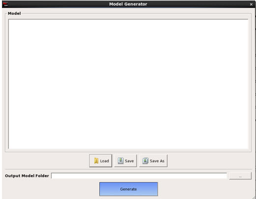

You can optionally generate
a new optical model that is used by the Mask Pattern Classification tool.
Procedure
- In the
Scanner pane of the Parameters tab in Calibre
DefectClassify, click the Generate button.
A Model Generator dialog box appears.
Figure 1. Model
Generator
- In the
Model Generator dialog box, you can either enter the model text
directory, or load a preexisting model.
- Click Generate on
the Model Generator dialog box to generate the model files. The generated
model is kept in the path specified in Output Model Folder.